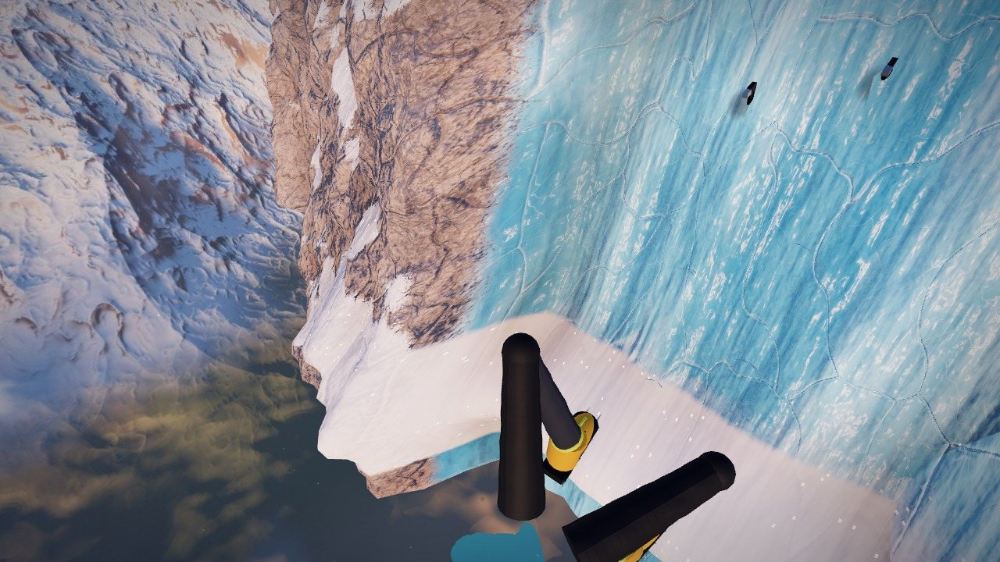
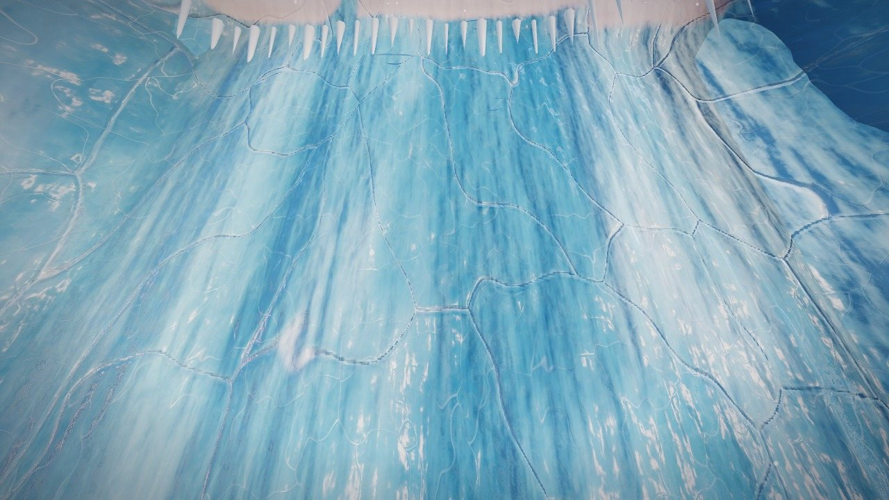
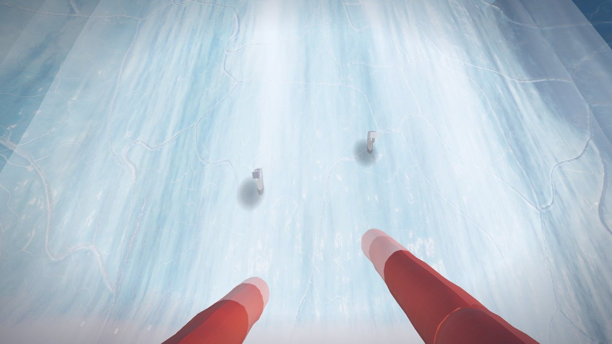
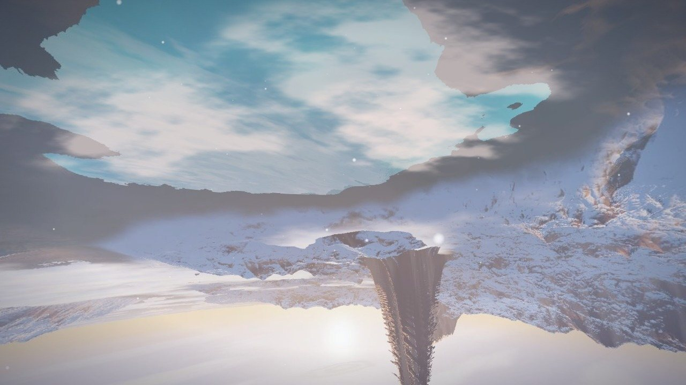

White Silence
Patagonia. No rope. Fifteen metres of ice to the summit ridge.
Play free
- 3 to 5 minutes
- Mobile and desktop
- No download
- No account
Alone on the wall




How to climb
Swing your tools
Tap or click a ring to drive an ice tool into the wall.
Look down
When your feet fall behind, the view tilts to your crampons and the drop below.
Kick in
Tap a ring to set each foot. Good feet save your arms.
Pull up
When tools and feet are set, pull up. Then do it again.
Left rings move your left limb. Right rings move your right limb. Orange holds crumble, so get off them fast. Rest on the snow ledges, and watch your stamina. If you slip, you have seconds to catch yourself.